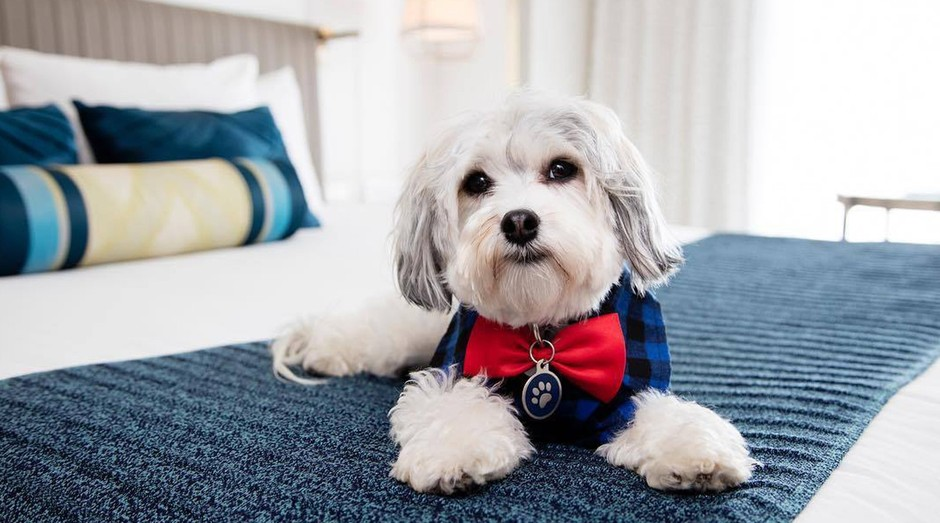
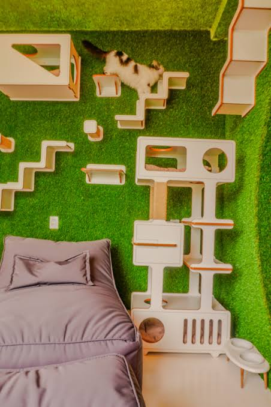
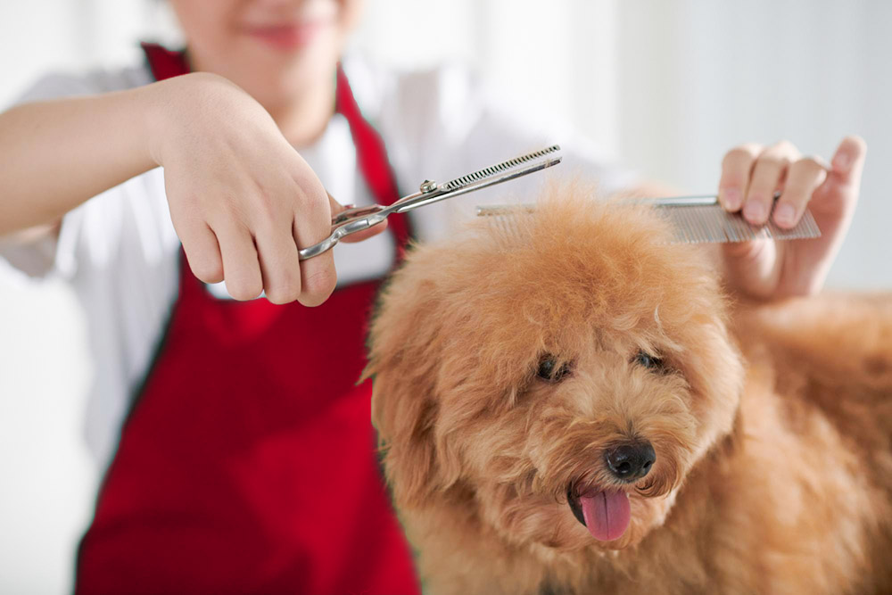
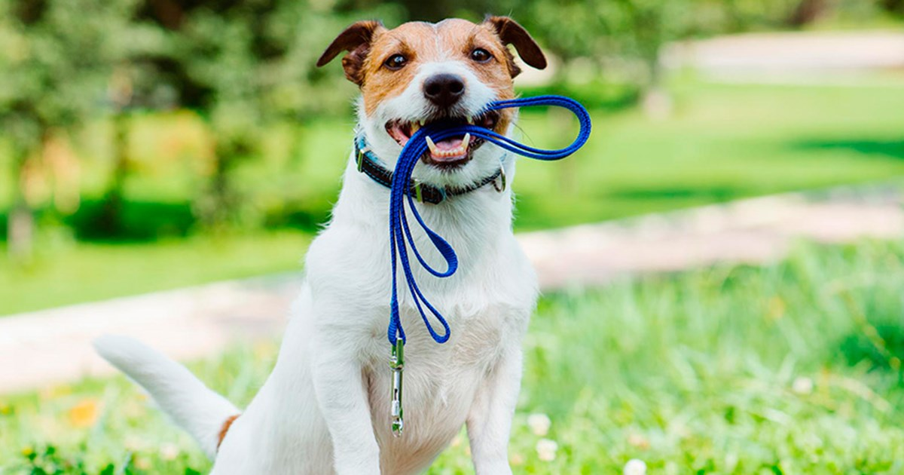

Hotel para Cães

Quartos individuais climatizados, área de brincadeiras ao ar livre e vigilância constante.
Oferecemos um conjunto completo de soluções para garantir a saúde e a felicidade do seu animal.

Quartos individuais climatizados, área de brincadeiras ao ar livre e vigilância constante.

Gateira tranquila, isolada do barulho dos cães, com estruturas de escalada e iluminação natural.

Higiene completa, corte de unhas, limpeza de ouvidos e tratamento de pelo adaptado a cada raça.

Caminhadas ao ar livre com treinadores certificados para manter o seu patudo ativo e saudável.
| Serviço | Duração / Frequência | Preço Médio (€) |
|---|---|---|
| Alojamento Cão | Diária (24h) | 20,00 € |
| Alojamento Gato | Diária (24h) | 15,00 € |
| Banho e Grooming | Por sessão | 25,00 € |
| Passeio Individual | 45 minutos | 10,00 € |